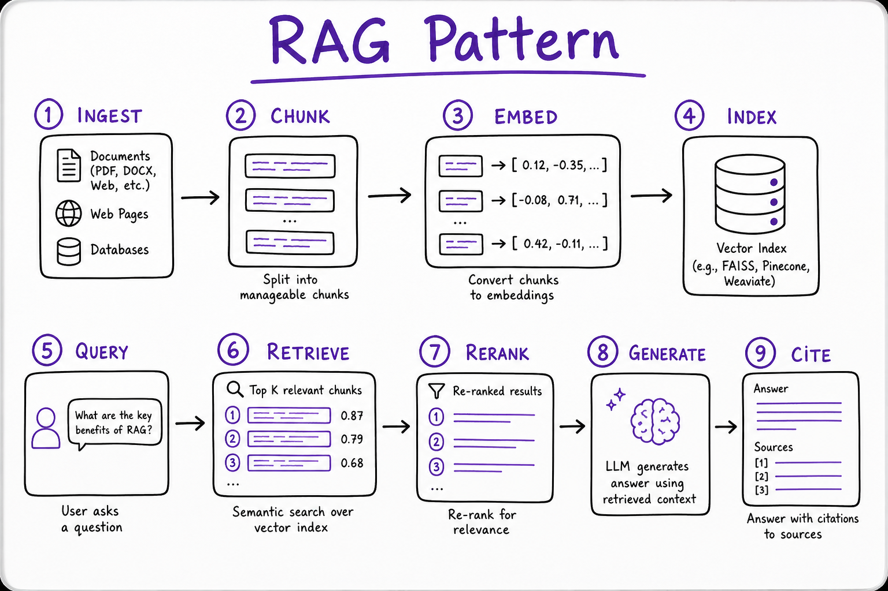
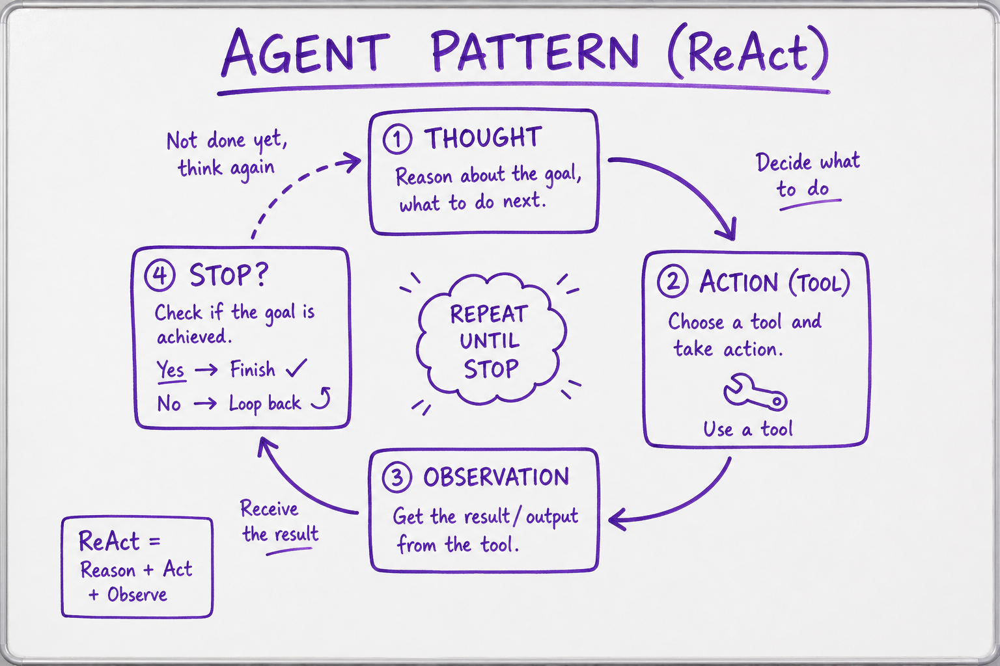

AI System Design Patterns // Fundamentals
Reusable architectures for production AI: RAG Q&A, ReAct agents, model routers, semantic cache, map-reduce over docs, and eval-gated deploy pipelines—the SDE3 system design vocabulary.

Pattern catalog connecting fundamentals to tech (LangGraph, vector DB) and systems (RAG, agents).
01 — What & Why
Interview system design for AI products expects named patterns with tradeoffs, not a single LLM box. This sheet maps patterns to when they apply and what to draw on the whiteboard.
01a — Core Concepts
| Pattern | Problem solved |
|---|---|
| RAG | Grounded answers from private corpus |
| Tool-using agent | Actions + fresh data (API, SQL) |
| Model router | Cost/latency vs quality |
| Semantic cache | Duplicate query cost |
| Map-reduce | Corpus larger than context |
01b — API Surface
# LangGraph-style agent edge (conceptual)
graph.add_node("plan", plan_node)
graph.add_node("tools", tool_node)
graph.add_conditional_edges("plan", should_continue, {"tools": "tools", END: END})02 — When to Use
| Requirement | Pattern |
|---|---|
| FAQ over docs | RAG + citations |
| Book flight / query DB | Agent + tools |
| 1000-page PDF Q&A | Map-reduce + RAG |
| High QPS support | Router + semantic cache |
03 — Architecture
[Client] ──► API ──► Router ──┬──► RAG pipeline ──► LLM
├──► Agent (LangGraph) ──► tools
└──► Cache hit ──► response04 — RAG Pattern
Ingest → chunk → embed → index → retrieve → rerank → generate. See RAG End-to-End and Vector DBs.
05 — Agent Pattern
ReAct loop: reason → act (tool) → observe until stop. See Agent Architectures.
06 — Router Pattern
Cheap classifier or heuristic routes to mini vs frontier model; can save 80%+ cost on homogeneous traffic.
07 — Semantic Cache
Embed query; if cosine > 0.95 to prior query, return cached answer. Great for support macros.
08 — Map-Reduce & Eval Gate
Map: summarize chunks in parallel; Reduce: merge with final LLM call. Handles corpuses beyond context window.
Eval gate: golden set regression in CI; block deploy if faithfulness or task success drops. See Evaluation Metrics.

Ingest, index, retrieve, rerank, generate.

Plan, tool call, observe loop.
09 — Production & Ops
- Compose patterns: RAG inside agent tools
- Feature flags per pattern path
- Per-pattern SLO and cost dashboards
10 — Where It Shows Up
AI vertical
11 — Common Pitfalls
- Agent when RAG suffices
- No eval gate on prompt changes
- Monolithic prompt for map-reduce
- Cache stale answers after doc update